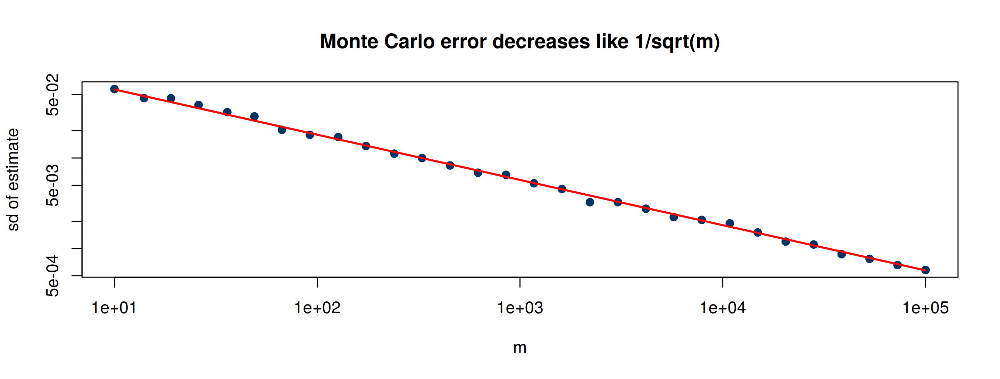
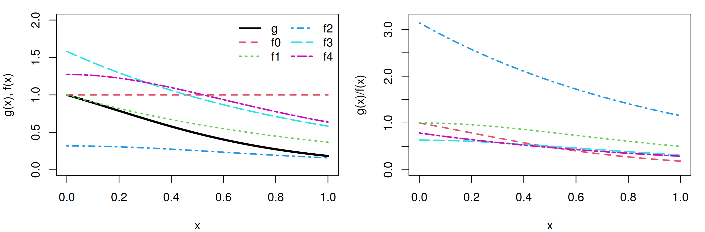

set.seed(4750)
m <- 10000
x <- runif(m)
theta.hat <- mean(exp(-x))
c(estimate = theta.hat, exact = 1 - exp(-1))estimate exact
0.6327 0.6321 MATH 4750 / MSSC 5750 Computational Statistics
Marquette University
MATH 4750 - Spring 2027
\[ \hat\theta = \overline{g(X)} = \frac1m\sum_{i=1}^m g(X_i),\qquad X_1,\dots,X_m\stackrel{\text{iid}}{\sim}f. \]
\[ \theta = \int_0^1 g(x)\,dx = \mathrm{E}[g(X)],\quad X\sim\text{Uniform}(0,1). \]
Example 6.1. Estimate \(\theta = \int_0^1 e^{-x}\,dx = 1 - e^{-1}\).
\[ \theta = \int_a^b g(t)\,dt = (b-a)\int_a^b g(t)\frac{1}{b-a}\,dt = (b-a)\,\mathrm{E}[g(Y)],\quad Y\sim\text{Uniform}(a,b). \]
Estimate \(\theta = \int_2^4 e^{-x}\,dx = e^{-2}-e^{-4}\):
estimate exact
0.1173 0.1170 Equivalently, substitute \(y = (t-a)/(b-a)\) and integrate over \((0,1)\). Show the two estimators are identical in distribution.
Estimate the standard normal cdf \(\Phi(x) = \int_{-\infty}^x \frac1{\sqrt{2\pi}}e^{-t^2/2}\,dt\).
[,1] [,2] [,3] [,4] [,5] [,6] [,7] [,8] [,9] [,10]
x 0.10 0.367 0.633 0.900 1.167 1.433 1.700 1.967 2.233 2.500
cdf 0.54 0.643 0.737 0.816 0.878 0.924 0.956 0.976 0.988 0.994
Phi 0.54 0.643 0.737 0.816 0.878 0.924 0.955 0.975 0.987 0.994\(\Phi(x) = \mathrm{E}[I(Z\le x)]\), \(Z\sim N(0,1)\): just count!
[,1] [,2] [,3] [,4] [,5] [,6] [,7] [,8] [,9] [,10]
x 0.100 0.367 0.633 0.900 1.167 1.433 1.700 1.967 2.233 2.500
p 0.541 0.645 0.736 0.821 0.882 0.929 0.961 0.977 0.989 0.994
Phi 0.540 0.643 0.737 0.816 0.878 0.924 0.955 0.975 0.987 0.994\[ \mathrm{Var}(\hat\theta) = \frac{\sigma^2}{m},\qquad \sigma^2 = \mathrm{Var}(g(X)),\qquad \widehat{\mathrm{se}}(\hat\theta) = \frac1m\Big\{\sum_{i=1}^m(g(x_i) - \overline{g(x)})^2\Big\}^{1/2}. \]
By the CLT, \(\dfrac{\hat\theta - \mathrm{E}\hat\theta}{\sqrt{\mathrm{Var}\hat\theta}}\approx N(0,1)\), so \(\hat\theta\pm z_{\alpha/2}\,\widehat{\mathrm{se}}(\hat\theta)\) is an approximate CI.
Example 6.5 (error bounds). Estimate \(\Phi(2)\) and its variance with the indicator estimator:
cdf var exact_var
9.790e-01 2.056e-06 2.223e-06 [1] 0.9762 0.9818For an error bound \(\epsilon\) with confidence \(1-\alpha\): \(m\ge\left(z_{\alpha/2}\,\sigma/\epsilon\right)^2\).
set.seed(4750)
g <- function(u) exp(-u)
ms <- round(10^seq(1, 5, length = 30))
reps <- sapply(ms, function(m) replicate(200, mean(g(runif(m)))))
plot(ms, apply(reps, 2, sd), log = "xy", pch = 19, col = "#003366", xlab = "m", ylab = "sd of estimate",
main = "Monte Carlo error decreases like 1/sqrt(m)")
lines(ms, sqrt(var(g(runif(1e6))) / ms), col = "red", lwd = 2)
To gain one more decimal digit of accuracy we need 100 times more replicates. That is why variance reduction matters.
The \(1/\sqrt m\) rate does not depend on the dimension, unlike grid quadrature.
d MC exact
[1,] 2 3.138 3.142
[2,] 3 4.189 4.189
[3,] 5 5.242 5.264
[4,] 8 4.119 4.059Why does the estimate for \(d = 8\) get noisier, even though the rate is \(1/\sqrt m\)? (Hint: what happens to \(\sigma/\theta\)?)
For identically distributed \(U_1, U_2\): \[ \mathrm{Var}\left(\frac{U_1+U_2}{2}\right) = \frac14\big(\mathrm{Var}U_1 + \mathrm{Var}U_2 + 2\mathrm{Cov}(U_1,U_2)\big), \] which is smaller when \(\mathrm{Cov}(U_1,U_2) < 0\).
\[ \hat\theta = \frac1m\sum_{j=1}^{m/2}\big(g(u_j) + g(1-u_j)\big). \]
MC.Phi <- function(x, R = 10000, antithetic = TRUE) {
u <- runif(R / 2)
if (!antithetic) v <- runif(R / 2) else v <- 1 - u
u <- c(u, v)
cdf <- numeric(length(x))
for (i in 1:length(x)) {
g <- x[i] * exp(-(u * x[i])^2 / 2)
cdf[i] <- mean(g) / sqrt(2 * pi) + 0.5
}
cdf
}
x <- seq(.1, 2.5, length = 5)
set.seed(123); MC1 <- MC.Phi(x, anti = FALSE)
set.seed(123); MC2 <- MC.Phi(x)
print(round(rbind(x, MC1, MC2, Phi = pnorm(x)), 5)) [,1] [,2] [,3] [,4] [,5]
x 0.1000 0.7000 1.3000 1.9000 2.5000
MC1 0.5398 0.7582 0.9042 0.9731 0.9959
MC2 0.5398 0.7581 0.9032 0.9713 0.9937
Phi 0.5398 0.7580 0.9032 0.9713 0.9938 sd_simple sd_antithetic percent_reduction
6.931e-03 4.633e-04 9.955e+01 The antithetic estimator reduces the variance by about 99.5% at \(x = 1.95\) for the same number of function evaluations.
Suppose \(\mu = \mathrm{E}[f(X)]\) is known and \(f(X)\) is correlated with \(g(X)\). For any constant \(c\),
\[ \hat\theta_c = g(X) + c\big(f(X) - \mu\big) \]
is unbiased for \(\theta\), with variance \(\mathrm{Var}(g(X)) + c^2\mathrm{Var}(f(X)) + 2c\mathrm{Cov}(g(X),f(X))\), minimized at
\[ c^* = -\frac{\mathrm{Cov}(g(X),f(X))}{\mathrm{Var}(f(X))},\qquad \mathrm{Var}(\hat\theta_{c^*}) = \mathrm{Var}(g(X))\big(1 - \mathrm{Corr}(g(X),f(X))^2\big). \]
\(g(U) = e^U\), \(f(U) = U\) with \(\mathrm{E}U = 1/2\), \(\mathrm{Var}U = 1/12\), \(\mathrm{Cov}(e^U, U) = 1 - (1/2)(e-1)\), so \(c^* = -12 + 6(e-1)\approx -1.69\).
simple controlled exact
1.717 1.718 1.718 var_simple var_controlled reduction
0.242245 0.003941 98.373176 \(\theta = \displaystyle\int_0^1\frac{e^{-u}}{1+u^2}\,du\) with control variate \(f(u) = \dfrac{e^{-0.5}}{1+u^2}\), \(\ \mu = \mathrm{E}f(U) = e^{-0.5}\pi/4\).
[1] 0.9741[1] -2.436[1] 0.5254 0.5250[1] 0.060231 0.003125[1] 94.81Regressing \(g(X)\) on \(f(X)\): the least squares slope is \(\hat\beta_1 = \widehat{\mathrm{Cov}}(g,f)/\widehat{\mathrm{Var}}(f) = -\hat c^*\), and
\[ \hat\theta_{\hat c^*} = \hat\beta_0 + \hat\beta_1\mu = \text{the fitted value at } f = \mu. \]
theta.hat residual_se c_star.f(u)
0.5237699 0.0005497 -2.4362276 \(\hat\theta = g(X) + \sum_k c_k(f_k(X) - \mu_k)\), fitted by multiple regression; the estimate is the prediction at \((\mu_1,\dots,\mu_k)\).
set.seed(510)
u <- runif(10000)
f1 <- function(u) exp(-.5) / (1 + u^2); f2 <- function(u) exp(-u) / (1 - exp(-1))
mu <- c(exp(-.5) * pi / 4, 1) # E f1(U), E f2(U)
L2 <- lm(g(u) ~ f1(u) + f2(u))
c(theta.hat = sum(L2$coeff * c(1, mu)), se = summary(L2)$sigma / sqrt(10000),
R2 = summary(L2)$r.squared, exact = integrate(g, 0, 1)$value)theta.hat se R2 exact
5.249e-01 7.674e-05 9.990e-01 5.248e-01 The simple MC estimator samples uniformly, wasting effort where \(g\) is small. Instead, sample from an importance function \(f\) that is large where \(|g|\) is large:
\[ \theta = \int_A g(x)\,dx = \int_A\frac{g(x)}{f(x)}f(x)\,dx = \mathrm{E}_f\left[\frac{g(X)}{f(X)}\right],\qquad \hat\theta = \frac1m\sum_{i=1}^m\frac{g(X_i)}{f(X_i)},\ X_i\sim f. \]
\(\theta = \displaystyle\int_0^1\frac{e^{-x}}{1+x^2}\,dx\) with candidates
\[ \begin{aligned} f_0(x) &= 1,\ 0<x<1 & f_1(x) &= e^{-x},\ 0<x<\infty & f_2(x) &= \frac{1}{\pi(1+x^2)},\ x\in\mathbb{R}\\ f_3(x) &= \frac{e^{-x}}{1-e^{-1}},\ 0<x<1 & f_4(x) &= \frac{4}{\pi(1+x^2)},\ 0<x<1 \end{aligned} \]

m <- 10000; theta.hat <- se <- numeric(5)
g <- function(x) exp(-x - log(1 + x^2)) * (x > 0) * (x < 1)
set.seed(4750)
x <- runif(m) # using f0
fg <- g(x); theta.hat[1] <- mean(fg); se[1] <- sd(fg)
x <- rexp(m, 1) # using f1
fg <- g(x) / exp(-x); theta.hat[2] <- mean(fg); se[2] <- sd(fg)
x <- rcauchy(m) # using f2
i <- c(which(x > 1), which(x < 0)); x[i] <- 2 # to catch overflow errors in g(x)
fg <- g(x) / dcauchy(x); theta.hat[3] <- mean(fg); se[3] <- sd(fg)
u <- runif(m) # f3, inverse transform method
x <- -log(1 - u * (1 - exp(-1)))
fg <- g(x) / (exp(-x) / (1 - exp(-1))); theta.hat[4] <- mean(fg); se[4] <- sd(fg)
u <- runif(m) # f4, inverse transform method
x <- tan(pi * u / 4)
fg <- g(x) / (4 / ((1 + x^2) * pi)); theta.hat[5] <- mean(fg); se[5] <- sd(fg)
rbind(theta.hat, se) |> round(4) [,1] [,2] [,3] [,4] [,5]
theta.hat 0.5255 0.5192 0.5204 0.5245 0.5231
se 0.2458 0.4181 0.9510 0.0967 0.1415Divide the interval into \(k\) strata and estimate the integral on each with \(m/k\) replicates:
\[ \hat\theta_S = \frac1k\sum_{j=1}^k\hat\theta_j,\qquad \mathrm{Var}(\hat\theta_S) = \frac{1}{k^2}\sum_j\frac{\sigma_j^2}{m/k} = \frac1{mk}\sum_j\sigma_j^2 \le \frac{\sigma^2}{m}. \]
Example 6.12 (four strata, small \(M\)).
M <- 20; T2 <- numeric(4); estimates <- matrix(0, 10, 2)
set.seed(4750)
for (i in 1:10) {
estimates[i, 1] <- mean(g(runif(M)))
T2[1] <- mean(g(runif(M / 4, 0, .25))); T2[2] <- mean(g(runif(M / 4, .25, .5)))
T2[3] <- mean(g(runif(M / 4, .5, .75))); T2[4] <- mean(g(runif(M / 4, .75, 1)))
estimates[i, 2] <- mean(T2)
}
apply(estimates, 2, mean); apply(estimates, 2, var)[1] 0.5075 0.5271[1] 0.0017332 0.0002952M <- 10000; k <- 10; r <- M / k; N <- 50
T2 <- numeric(k); estimates <- matrix(0, N, 2)
set.seed(4750)
for (i in 1:N) {
estimates[i, 1] <- mean(g(runif(M)))
for (j in 1:k) T2[j] <- mean(g(runif(M / k, (j - 1) / k, j / k)))
estimates[i, 2] <- mean(T2)
}
colnames(estimates) <- c("simple", "stratified")
apply(estimates, 2, mean); apply(estimates, 2, var) simple stratified
0.5245 0.5248 simple stratified
7.069e-06 7.607e-08 \(\mathrm{Var}(\hat\theta^{SI})\le\mathrm{Var}(\hat\theta^{I})\): stratification never hurts importance sampling (Rizzo, Proposition 6.3).
Example 6.14. Using \(f_3(x) = e^{-x}/(1-e^{-1})\) on five subintervals \(\big((j-1)/5,\, j/5\big)\), implement stratified importance sampling for \(\int_0^1 e^{-x}/(1+x^2)\,dx\) and compare its standard error with the importance sampling result from Example 6.11.
numpy